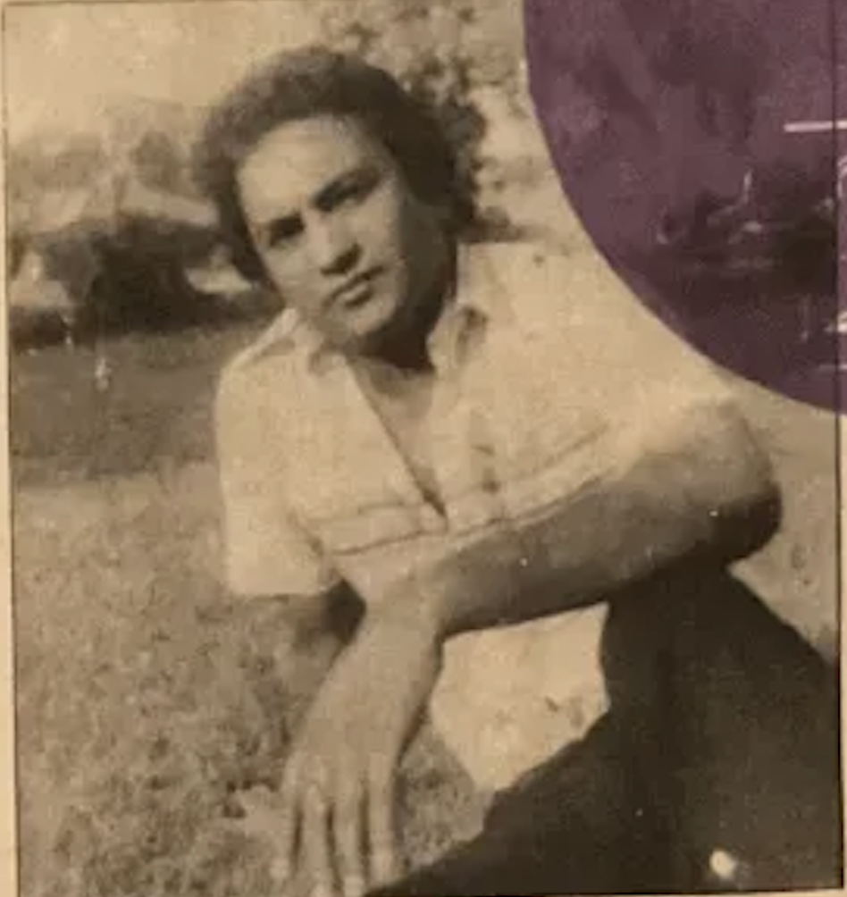
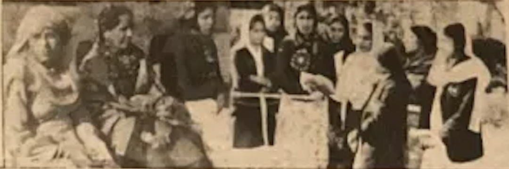
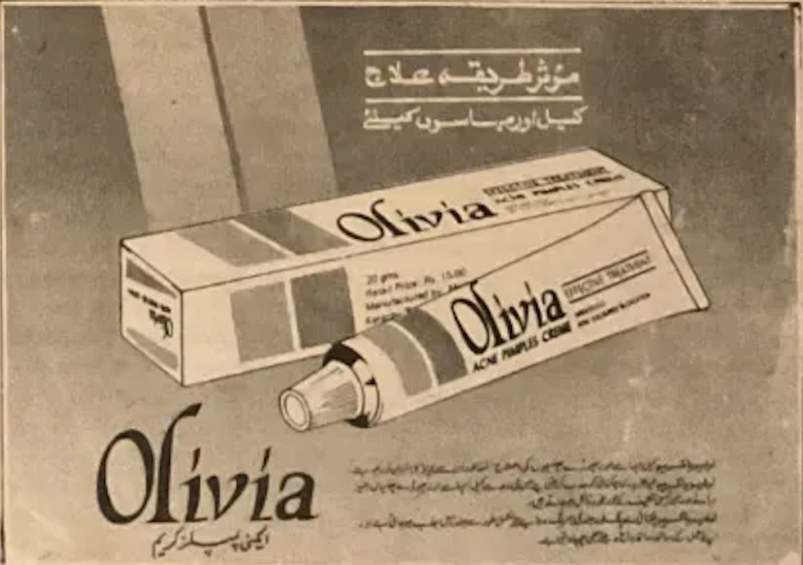
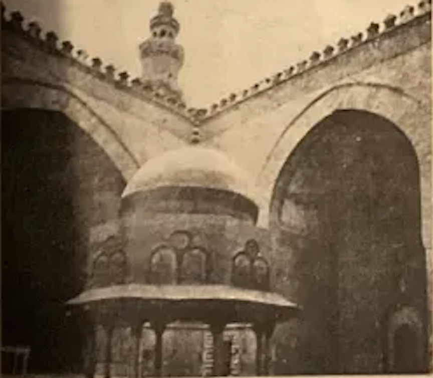

♦ PUBLISHED EVERY THURSDAY ♦
FOR THE WOMEN OF PAKISTAN ♦
ESTABLISHED 1964 ♦
Akhbar-e-Khawateen
اخبارِ خواتین
The Women's Weekly — Lahore, Pakistan
VOL. XI NO. 23
THURSDAY, 14 MARCH 1974
PRICE: 50 PAISA
Song and Life: A New Voice Defines a Generation
Producer Saleem Butt's new film Geet aur Zindagi has been widely praised
for its sensitive portrayal of a village girl who rises to become a celebrated
classical singer against considerable family opposition. Lead actress Shabana
Begum delivers a restrained yet powerful performance that critics are calling
the finest debut of the year.
The film's music, composed by Rafiq Khan, has already received considerable
airplay on Radio Pakistan. Our film correspondent awards it four stars and
recommends it as essential viewing for all lovers of Pakistani classical
music and cinema.
When asked about the changing tastes of the younger generation, she did not
express alarm. "Every generation must find its own music," she said warmly.
"But I believe the classical roots must not be forgotten. They are what give
our music its depth, its spirituality, its power to heal."
She has recorded over two hundred songs for Radio Pakistan and performed in
almost every major city from Peshawar to Karachi. Yet those who know her say
she remains entirely unchanged by fame — gracious, devoted to her craft,
and committed to passing the classical tradition to her students.
New Diary Reflects the Cultural Identity of Muslim Women
A new literary diary has been published this week offering a window into the
daily life, customs, and cultural values of Muslim women across Pakistan.
The author writes that this diary is for all women who wish to keep their lives
organised while remaining connected to their cultural and religious identity.
It has already drawn considerable praise from readers in Lahore and Karachi.
Singing Is the Dwelling of My Soul
A conversation with the legendary voice that has captivated Pakistan
for three decades
By Fatima Ahmad — Staff Correspondent, Lahore Bureau

The artist at her Lahore home. (Archive photograph.)
Ay Nasar
A new style of singing finds its title
In a small, sun-lit room in the Model Town neighbourhood of Lahore,
surrounded by bouquets of flowers sent by admirers from across the country,
sat a woman whose voice has moved the hearts of millions. Her humility was as
remarkable as her talent. When asked what music means to her, she smiled
quietly and said: "Gaana meri rooh ki basti hai" —
Singing is the very dwelling-place of my soul.
Her journey began not in any grand concert hall but in the simple courtyard of
her ancestral home in Kasur, where as a young girl of eight she would hum along
to her grandmother's folk songs. She trained under Ustad Ghulam Ahmed, one of
the finest classical musicians of his generation, learning the ragas that would
later become the foundation of her celebrated thumri and ghazal style.
She has recorded over two hundred songs for Radio Pakistan and performed in
almost every major city from Peshawar to Karachi. Yet she remains entirely
unchanged by fame — gracious, devoted to her craft, and committed to
passing on the classical tradition to the students who flock to her weekly
music classes in Lahore.
Punjab Education Dept. Acts: New Textbooks for Girls' Schools
Revised curriculum to include stories of Pakistani heroines alongside
traditional lessons in literacy and numeracy
The Punjab Department of Education announced last Tuesday that a new set
of textbooks for girls' primary schools would be introduced from the next
academic session in September. The revised curriculum places greater
emphasis on science, mathematics, and civic responsibility, and will
feature illustrations of notable Pakistani women including teachers,
doctors, scientists, and athletes.
Senior officials confirmed that the writing teams include women educators
from across the province, many of whom have taught for two or more decades
in government schools. Critics have questioned whether adequate copies can
be printed and distributed before September. The Department has promised
that pilot schools in all five divisions will receive copies by June for
trial use and review.
This Week Inside
Girls' Education Drive in Punjab
Recipes from the Sindhi Kitchen
A Talk with Madam Noor Jahan
Child Health: A Doctor Speaks
New Designs in Block Printing
Your Letters, Our Answers
Lahore Women Win National Needlework Prize

Three talented women from the Lahore Mahila Sabha carried home the first
prize at the All-Pakistan Needlework and Handicraft Exhibition held in
Karachi last week.
Their prize-winning embroidered tablecloth, inspired by Mughal garden
motifs, impressed the judges with its fine detail and rich use of
traditional Sindhi mirror-work alongside Punjabi phulkari stitch.
The organizers announced that this year's exhibition drew record
participation, with over four hundred entries from twelve cities
across Pakistan.
Advertisement
Effective Skin Treatment

Olivia
Acne Pimple Cream
For clear, healthy skin — trusted by women across Pakistan.
Available at all leading chemists.
Muslim Heritage: Lahore's Historic Mosques and Their Golden Past
A historian urges women to reconnect their families with Pakistan's
remarkable architectural and cultural legacy

Lahore's ancient mosques are not merely places of worship — they are
witnesses to centuries of civilisation and culture. Dr. Rabia Sultana,
Professor of Islamic History at Punjab University, urges women to take
their children to these historic sites. "When we take our daughters to
the Wazir Khan Mosque or the Badshahi Mosque, we are introducing them
not to a building but to their identity," she told our reporter.
Professor Sultana argues that the study of Muslim architecture should
be included in school curricula so that the new generation learns to
value its inheritance. Her new book on the Mughal monuments of Lahore
will be available from next month at leading bookshops.
Religious & Cultural Exhibition
The New Exhibition of Muslim Civilisation will be held at Lahore Museum
from 20 March to 5 April. Free entry for all women and school students.
Sponsored by the Punjab Culture Authority.
Dr. Razia Speaks: How Mothers Can Protect Their Children
from Seasonal Illness
A leading paediatrician at Lady Aitchison Hospital offers practical
guidance for families as the spring season arrives
As March arrives and the days grow warmer, Dr. Razia Sultana, Senior
Paediatrician at Lady Aitchison Hospital, urges mothers to be vigilant
about common spring ailments. "The change of season weakens resistance,
especially in young children," she told our reporter. "Simple precautions
can prevent many unnecessary visits to the clinic."
She recommended ensuring that children drink clean boiled water,
that windows are kept clean to reduce dust, and that children wash
their hands before meals. "These habits cost nothing and protect
greatly," she said.
Dr. Sultana also advises mothers to watch for symptoms of spring
fever, chest coughs, and eye irritation, and to seek medical advice
early rather than relying on home remedies alone.
This advice is especially important for infants under two years of age,
she stressed. The doctor noted that many families in Lahore still
prefer traditional remedies over visiting a clinic, a habit that can
sometimes delay necessary treatment and worsen a child's condition.
Dr. Sultana holds a free monthly clinic at Lady Aitchison Hospital
every first Tuesday. Mothers are welcome to bring children of all
ages for general check-ups and seasonal health advice.